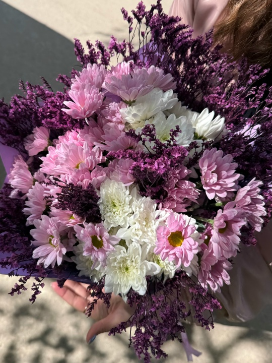
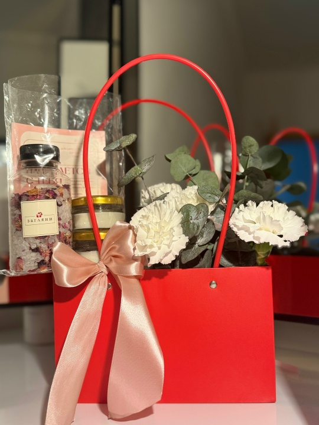
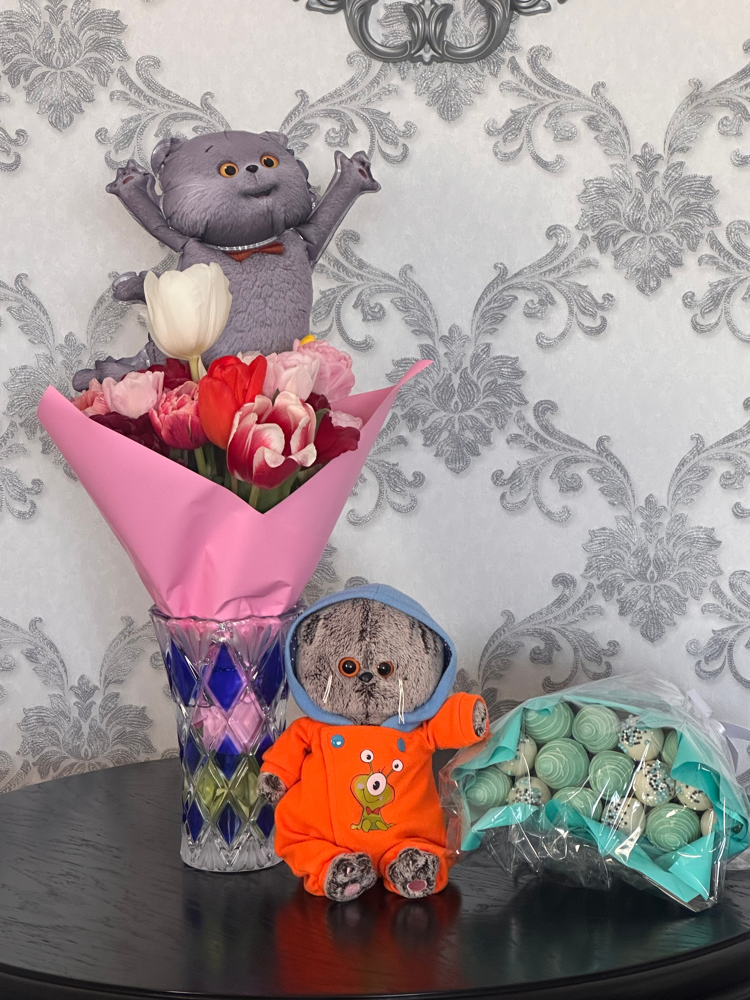

Каталог букетов
В нашем каталоге представлены готовые композиции. Все цены указаны в рублях. Актуальные букеты и новые поступления смотрите в нашей группе vk.ru/bykotflowers.
| Название | Состав | Цена |
|---|---|---|
| «Hello Kitty» | Розы, диантусы, гипсофилла | 6000 ₽ |
| «Стипендии хватит» | Хризантемы | 3 200 ₽ |
| «Базовый минимум» | Диантусы, эвкалипт | 1 100 ₽ |
| «Розочки» | Розы, эвкалипт | 4 200 ₽ |
Фотографии букетов




Больше букетов - во ВКонтакте
В группе vk.ru/bykotflowers мы публикуем новые композиции, акции и сезонные предложения. Там же можно оформить заказ в личных сообщениях.